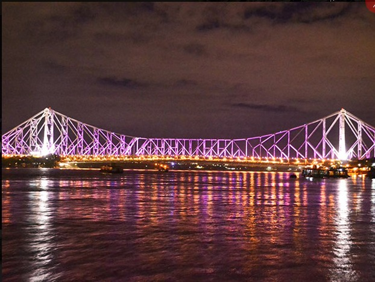
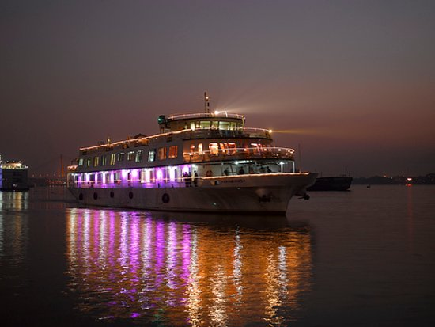

Top three activities to do at Kolkata

Stroll through Howrah Bridge
Take a walk across this iconic cantilever bridge that spans the Hooghly River.

Take a Ferry Ride on the Hooghly River
Enjoy a scenic ferry ride to experience the city from the water.

Indulge in Authentic Bengali Cuisine
Visit popular eateries or street food stalls to experience the city's culinary heritage firsthand.